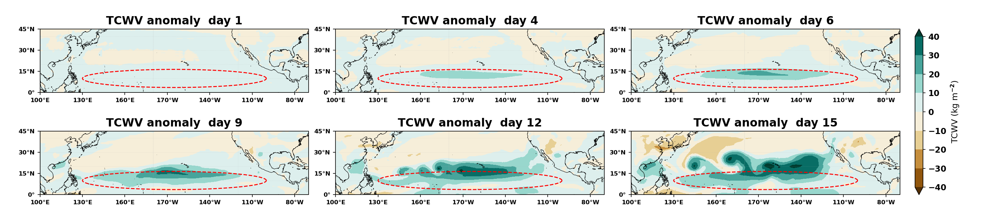
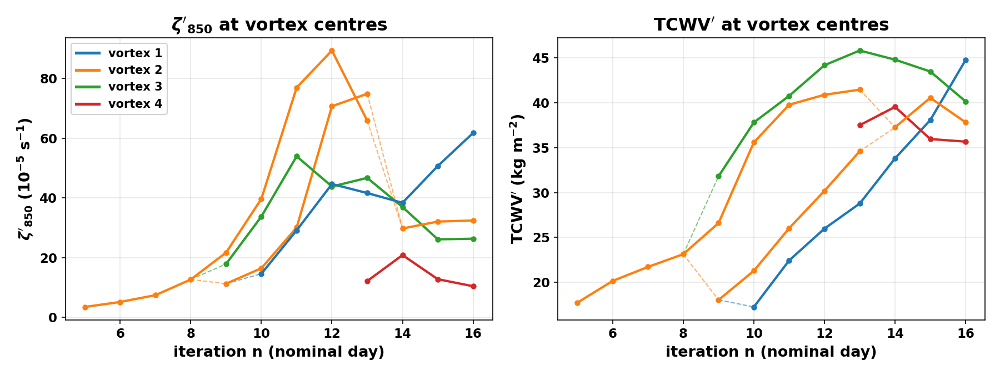
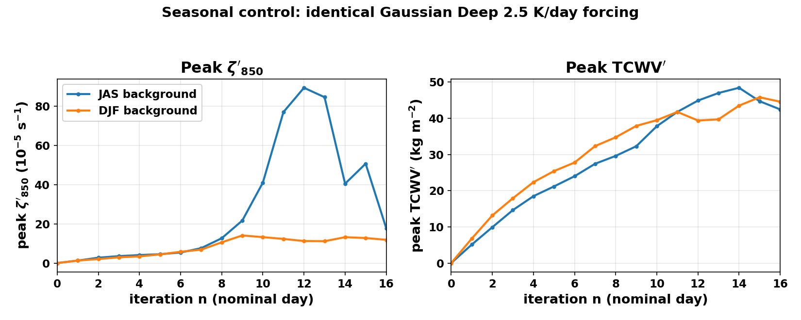
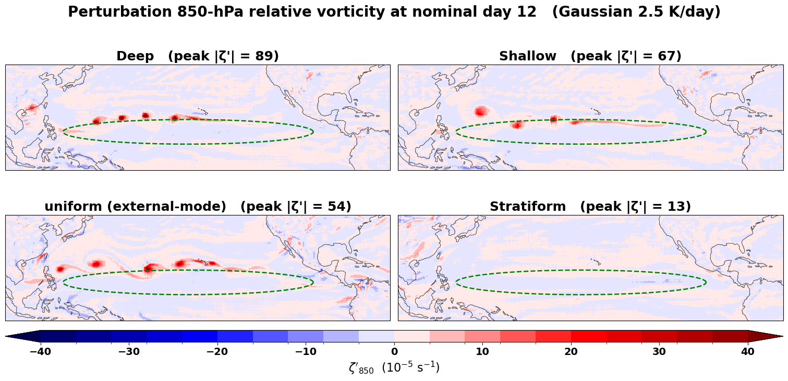
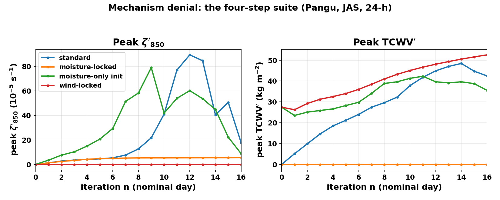
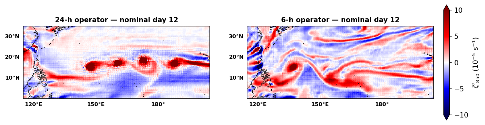
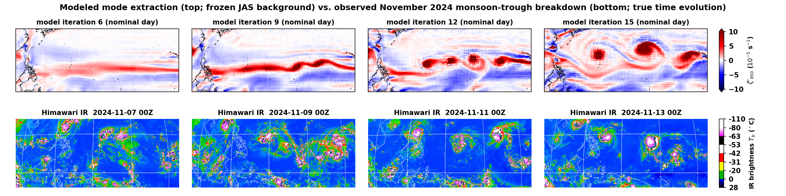

3. Results#
結果章節，依你的筆記展開成七小節：
3.1 加熱初期的「北偏渦度帶」—— 你的 PV 論證（加熱對稱於 10°N，但 f 越北越大 → PV 生成
D(PV)/Dt = PV ∂θ̇/∂θ 越北越強 → 正渦度帶長在加熱北緣），引 Haynes & McIntyre 1987、
Schubert et al. 1991 撐腰。
3.2 正壓崩解主結果 —— 全面改用高斯加熱的主管線 run（outputs/JAS，24h、全程持續加熱
20 天；denial 套組與 DJF 為 16 天）：
panels_vort + panels_tcwv + timeseries；不再對照/標註 AI-Forum。
3.3 什麼控制反應強弱 —— 背景季節對照 → 振幅 → 垂直分布。垂直分布已依你的 Q3 筆記
（FTR/Q3_vertical_profile_F0.md）用正式 JAS+gauss 四組 run 定稿：
ζ' Deep 89 > Shallow 76 > uniform 54 ≫ Strat 8；TCWV' uniform 69 > Shallow 52 >
Deep 48 ≫ Strat 16。舊的「渦度不敏感」前提已刪；改為「兩個場服從 Q(p) 的
不同泛函」，交棒給 3.4。
3.4 已全面改寫（回應你的 Q3 擔憂）—— 舊的全柱外部模態/邊界值論證撐不起新數字
（Deep 最強是硬反例），已由「低層非絕熱 PV 源」理論取代：
S = [Q(700)−Q(1000)]（內部項 ∝ ∂θ̇/∂z，蓋 3.1 同一條方程）+ β·Q_B（地面 PV sheet，
β=0.55 為 O(1) 稀釋因子，用 uniform/Deep 一個數字校準——表中 Deep 列已標明
"calibration"，避免被誤讀成獨立預測）。S 重現 ζ' 全部穩健排序
（Strat 為負 → 崩潰；uniform 只剩邊界通道 → 居中；Deep/Shallow 內部梯度大 → 最強）。
透明度聲明（新增）：Deep/Shallow 兩者 Q_B 皆為 0，S 比值 = 內部梯度比 1.15/0.92，
與 β 無關——任何 β 下 S 都把 Shallow 排在 Deep 之上，與單一實現的觀測順序相反；
正文已明寫這一對屬於 §2.6 的混沌不確定度（可用小 ensemble 檢驗，FIGURES_TODO Q4）。
Fig 6 已由合作者換成四 profile 的 ζ'₈₅₀ day-12 四拼圖（比舊 EX/BL 圖更切題：
它顯示的正是 S 所支配的判別場）；EX/BL 圖移到附錄 B.5。
TCWV' 則服從邊界層平均加熱 ⟨Q⟩₁₀₀₀₋₈₅₀（排序完全命中）。EX/BL 等價實驗重新詮釋為
「純邊界通道、等 Q_B → 等 S」的驗證。詳細推演見 logic/results3.4.md。
3.5 機制剝奪（Step 2–4）—— 定量已定稿（24h 高斯套組）：鎖水氣 ζ' 5.5（抑制 94%）；
只給水氣 ζ' 79 @ d9（水氣單獨也能起渦）；鎖風 ζ'≡0、TCWV 續增至 53（水氣無風則惰性）。
3.6 24h vs 6h —— 先聲明 Pangu 無時間輸入（naive「日夜混疊」不成立），再給兩個真正的機制：
(i) 6h 算子統計上學到陸地日夜加熱冷卻傾向、24h 算子同地方時對映把日夜訊號積分掉；
(ii) 同樣 lead 要疊 4 倍次數 → 棋盤格假影與單步誤差級聯 4 倍累積。兩者都講清楚。
3.7 觀測對照 —— 依 §2.3 的紀律：比「收斂模態結構」不比「逐步對日期」；2024 年 11 月
四颱並存事件；季風槽當週準定常是可比較性的關鍵論據。
3.1 Spin-up: a vorticity band on the poleward flank of the heating#
The prescribed heating is meridionally symmetric about its center at 10°N, yet the model’s first response is not. Within the first two to three iterations a coherent band of positive perturbation vorticity emerges along the northern flank of the heated region (Fig. 3a, first panels), with much weaker signal to the south. This asymmetry is exactly what diabatic PV dynamics requires. For heating \(\dot\theta\) acting on air with potential vorticity \(P\), the material PV source is (Haynes and McIntyre 1987)
below the level of maximum heating, where \(\partial\dot\theta/\partial\theta > 0\): diabatic heating amplifies PV in proportion to the PV already present. In the undisturbed tropics the ambient PV is dominated by the planetary contribution, which increases monotonically with latitude (\(P \propto f\) at leading order). A meridionally symmetric heating therefore generates more PV on its poleward side than on its equatorward side, and the low-level PV (and vorticity) band that results sits displaced to the north of the heating maximum. This is the same mechanism by which sustained convective heating builds the ITCZ shear zone in PV-theoretic models of the Hadley circulation (Schubert et al. 1991). The model was never told any of this: it receives a symmetric temperature increment and produces the asymmetric PV response that the conservation theorems demand — an early indication that the learned operator carries the relevant dynamics.

Fig. 3: Snapshot panels of \(\zeta'_{850}\) across the iteration (nominal days 0–15). Early panels show the poleward-displaced vorticity band; later panels the roll-up into discrete vortices.
3.2 Barotropic breakdown of the heated strip#
As the forcing continues, the vorticity band sharpens and elongates along roughly 8–15°N, and from nominal day 9 onward it undulates, pools its vorticity, and rolls up into discrete vortices — approximately four by nominal day 15, spaced a few thousand kilometers apart along the strip (Fig. 3, later panels). The morphology is the canonical ITCZ breakdown of Guinn and Schubert (1993) and Nieto Ferreira and Schubert (1997): a varicose distortion of a cyclonic PV strip, pooling into proto-vortices connected by filaments, followed by discretization. The perturbation column moisture amplifies in phase with the vortices (Fig. 4), consistent with the wind–moisture coupling analyzed in Section 3.5.
Quantitatively, the peak 850-hPa perturbation vorticity reaches \(\zeta' \approx 89 \times 10^{-5}\ \mathrm{s^{-1}}\) at nominal day 12, when four discrete vortices stand along \(\sim\) 15°N between roughly 145°E and 170°W, and the peak perturbation column water vapor reaches \(\approx 48\ \mathrm{mm}\) at nominal day 14; thereafter the vortices drift poleward and the chain loses its zonal alignment. The co-amplification of the moisture field with the vorticity field, and the emergence of a discrete vortex chain from a smooth zonal forcing, are the two signatures the experiment was designed to test for. Consistent with the chaos caveat of Section 2.6, individual vortex longitudes are sensitive to the experimental details and only the statistics — vortex count, spacing, latitude, amplitude — are robust.

Fig. 4a: \(\mathrm{TCWV}'\) snapshot panels for the headline run.

Fig. 4b: \(\zeta'_{850}\) (left) and \(\mathrm{TCWV}'\) (right) at individual vortex centres versus iteration; each line is one tracked vortex branch.
3.3 What controls the response#
Having established the breakdown itself, we ask what sets its strength. The sensitivity experiments of Section 2.5 identify three controls — the basic state, the forcing amplitude, and the vertical structure of the heating — and each carries a distinct piece of physics.
The dominant control is the background, not the forcing. Running the identical forcing on the DJF climatology instead of JAS collapses the instability (Fig. 5a). On the summer background the peak vorticity undergoes explosive growth after nominal day 8, reaching \(89 \times 10^{-5}\ \mathrm{s^{-1}}\); on the winter background — whose ITCZ lies south of the heated band — it saturates near \(14 \times 10^{-5}\ \mathrm{s^{-1}}\) by day 9 and never organizes, a factor of \(\sim\)6 weaker. The moisture response, by contrast, is nearly identical in the two seasons (Fig. 5b): the column moistening is the direct, quasi-passive thermodynamic response to the sustained heating, available on any background, whereas the vortex growth requires a basic state whose ITCZ shear zone is ripe for barotropic breakdown. The instability, in other words, belongs to the background state, and the heating merely excites it — as barotropic-instability theory would insist.

Fig. 5: Seasonal control under identical Gaussian Deep \(2.5 \mathrm{K} \cdot \mathrm{day^{-1}}\) forcing, JAS versus DJF background. (a) Peak \(\zeta'_{850}\) versus iteration: explosive growth on the summer background, saturation without organization on the winter background. (b) Peak \(\mathrm{TCWV}'\) versus iteration: nearly identical in the two seasons.
The forcing amplitude, by contrast, sets only where on a familiar curve the experiment sits — and the two response fields part company along it. An amplitude sweep at \(0.5\), \(1\), \(2.5\), \(5\), and \(10\ \mathrm{K} \cdot \mathrm{day^{-1}}\) (Appendix B.2) shows the column moistening rising monotonically with amplitude (peak \(\mathrm{TCWV}'\) climbs from \(35\) to \(61\ \mathrm{mm}\)), consistent with a quasi-passive thermodynamic response. The vortex response, however, is non-monotonic: peak \(\zeta'\) rises from \(\sim 64\) at \(0.5\)–\(1\ \mathrm{K} \cdot \mathrm{day^{-1}}\) to its maximum of \(89 \times 10^{-5}\ \mathrm{s^{-1}}\) at the \(2.5 \mathrm{K} \cdot \mathrm{day^{-1}}\) headline value, then falls back to \(68\) at \(5\) and \(42\) at \(10\ \mathrm{K} \cdot \mathrm{day^{-1}}\), with the peak arriving ever earlier (day 19 → 9). Beyond a few \(\mathrm{K} \cdot \mathrm{day^{-1}}\) the forcing is overdriven: the response goes strongly nonlinear from the outset, spreads well beyond the forced strip into the midlatitudes, and the clean four-vortex roll-up never consolidates. The headline \(2.5 \mathrm{K} \cdot \mathrm{day^{-1}}\) is thus close to the amplitude that maximizes the organized vortex response, not merely a point on a rising quasi-linear stretch.
The vertical structure of the heating is the most discriminating control of the three, and — tellingly — the two response fields order the four profiles differently. With equal amplitude and horizontal envelope:
profile |
peak \(\zeta'\) (\(10^{-5}\ \mathrm{s^{-1}}\)) |
peak \(\mathrm{TCWV}'\) (mm) |
|---|---|---|
Deep (peak 600 hPa) |
89.4 |
48.4 |
Shallow (peak \(\sim\)800 hPa) |
76.1 |
51.7 |
uniform (1000–200 hPa) |
54.0 |
69.2 |
Stratiform (low-level cooling) |
8.3 |
16.3 |
Three features stand out. First, the profiles that heat the lower free troposphere (Deep, Shallow) build the strongest vortex chains even though both deliver zero heating at 1000 hPa. Second, the vertically uniform profile — the one with the largest boundary-layer heating — is markedly weaker in vorticity yet strongest in moisture. Third, stratiform heating, which cools the lower troposphere, kills the instability almost completely while still moistening weakly. (Consistent with Section 2.6, we read the Deep-versus-Shallow difference as within the chaos-dominated uncertainty of peak amplitudes; the Stratiform collapse and the uniform/Deep separation are large and robust.) The full time series are shown in Appendix B.4. The vorticity and moisture responses are evidently controlled by different functionals of the same profile \(Q(p)\) — identifying those functionals is the subject of the next subsection.
3.4 What the vertical profile controls: the low-level diabatic PV source#
The theory that fits both orderings is already on the table: it is the diabatic PV source of Section 3.1, now read in the vertical. The interior source \(DP/Dt \approx P\,\partial\dot\theta/\partial\theta\) generates cyclonic PV wherever the heating increases with height, i.e., below the heating maximum; and heating delivered at the lower boundary itself contributes a separate boundary source — a Bretherton-type PV sheet at the surface (Haynes and McIntyre 1987). Because the strip whose breakdown we measure lives at 850 hPa, the relevant quantity is the source integrated over the layer in which that strip is built, roughly 1000–700 hPa:
with \(\beta\) an \(O(1)\) dilution factor for the surface-concentrated sheet (it must be redistributed over the depth of the strip, so \(\beta < 1\)). Evaluating \(S\) on the model levels for the four profiles and normalizing to the uniform case (with \(\beta = 0.55\) fixed by the single calibration condition that \(S\) reproduce the uniform-to-Deep ratio):
profile |
interior \(Q_{700}{-}Q_{1000}\) |
\(Q_B\) |
\(S\) (rel. uniform) |
observed \(\zeta'\) (rel. uniform) |
|---|---|---|---|---|
Deep |
0.92 |
0 |
1.66 (calibration) |
1.66 |
Shallow |
1.15 |
0 |
2.08 |
1.41 |
uniform |
0.00 |
1 |
1.00 |
1.00 |
Stratiform |
\(-0.71\) |
0 |
\(< 0\) |
0.15 |
The functional reproduces every robust feature of the ordering: Deep and Shallow are strongest because their low-level heating gradient is large — the surface value is irrelevant; uniform is intermediate because its interior gradient vanishes and it forces the strip through the (diluted) boundary pathway alone; and Stratiform’s low-level cooling makes the source negative precisely in the layer where the strip and its moisture supply must be built — the instability is not weakened but switched off. The one free number, \(\beta \approx 0.55\), is of the expected order (\(O(1)\), \(<1\)); since it is fixed on the Deep row, that row matches by construction and the Shallow and Stratiform rows are the independent tests. One transparency point deserves emphasis. Within the sine pair the value of \(\beta\) is immaterial — Deep and Shallow both have \(Q_B = 0\), so their \(S\) ratio is pinned at the interior-gradient ratio \(1.15/0.92\) regardless of calibration — and \(S\) therefore ranks Shallow above Deep for any \(\beta\), whereas the single realizations rank Deep first. This inversion involves exactly the pair that Section 2.6 assigns to chaos-dominated peak-amplitude uncertainty (the two runs also peak on different nominal days), and we read it as such rather than tune it away; the \(\beta\)-independent content of the theory — the sign of \(S\) and the separation of the sine profiles from uniform — is what the data test, and what they confirm.
The moisture response obeys a different and simpler functional: the mean heating over the moisture-rich boundary layer, \(\langle Q\rangle_{1000-850}\), which sets the low-level convergence. Its values (uniform 1.00, Shallow 0.55, Deep 0.28, Stratiform \(-0.49\)) predict exactly the observed \(\mathrm{TCWV}'\) ordering — uniform strongest, Stratiform collapsed — with Deep and Shallow lifted above the passive prediction by the vortex-driven convergence of their strong circulations, the same two-way coupling isolated in Section 3.5.
Figure 6 shows the fingerprint directly, in the field the functional orders. At nominal day 12 the Deep and Shallow profiles have organized discrete vortex chains along the strip; the vertically uniform profile — the external-mode/boundary-only case, with zero interior gradient in the strip-building layer — produces a weaker, less discretized band forced through the surface sheet alone; and the Stratiform profile has essentially no coherent low-level vorticity. The separations between the panels — the sine profiles above uniform, Stratiform extinguished — are the separations of \(S\). We stress that the discriminating field is the low-level vorticity, not the 500-hPa geopotential height: at 500 hPa the deep-column uniform profile projects most strongly of the four onto the external geopotential mode, exactly the reading this section rejects, and only \(\zeta'_{850}\) exposes the low-level strip that \(S\) governs (the 500-hPa view of the same four runs, which follows yet a third functional — the column integral — is shown in Appendix B.4, Fig. B5).
An independent pair of experiments corroborates the boundary pathway in isolation. External-mode heating (EX, 1000–50 hPa) and boundary-layer heating (BL, 1000–700 hPa) both have zero interior gradient in the strip-building layer, so both force the strip through the surface sheet alone; with equal boundary amplitude the source \(S\) is identical, and the model produces closely similar 500-hPa height responses (Appendix B.5, Fig. B6), consistent with the classical external-mode projection argument discussed there. We note for completeness that a full-column external-mode projection of the heating — integrating \(-\partial Q/\partial z\) from surface to top — is not the controlling functional: that integral collapses to the boundary values and cancels exactly the interior low-level gradient that the experiments show dominates. The strip is built locally, not by column projection. With this reading, one equation — the diabatic PV source — accounts for both the meridional asymmetry of Section 3.1 (through \(P \propto f\)) and the vertical-profile fingerprint of Section 3.3 (through \(\partial\dot\theta/\partial z\) plus its boundary term): the learned operator behaves, in both respects, as if it carries that equation.

Fig. 6: Perturbation 850-hPa relative vorticity \(\zeta'_{850}\) at nominal day 12 for the four heating profiles under identical Gaussian Deep-amplitude \(2.5 \mathrm{K} \cdot \mathrm{day^{-1}}\) forcing (JAS background, 24-h operator): Deep and Shallow (top) build discrete vortex chains; the vertically uniform / external-mode case (bottom-left) forms a weaker, less discretized band through the boundary pathway alone; Stratiform (bottom-right) is switched off. Panel titles give the instantaneous peak \(|\zeta'|\) (in \(10^{-5}\ \mathrm{s^{-1}}\)); the green dashed ellipse marks the heating footprint. The robust separations in the panels — the sine profiles above uniform, Stratiform switched off — are the separations of the low-level PV source \(S\); the Deep–Shallow pair order lies within single-run variability (Section 2.6). The companion 500-hPa comparison of the same four runs, and the EX/BL boundary-pathway pair, are in Appendix B.4–B.5.
3.5 Mechanism denial: the wind–moisture coupling is necessary#
The four-step suite factors the growth into its pathways (Fig. 7).
The moisture-locking experiment gives the sharpest verdict. With the perturbation moisture zeroed at every step (Step 2), the identical heating produces almost no vortex growth: the peak perturbation vorticity reaches only \(\approx 5.5 \times 10^{-5}\ \mathrm{s^{-1}}\), a suppression of roughly \(94\%\) relative to the standard run. Denying the model its moisture anomaly removes the co-amplification between converging perturbation winds and column moisture, and with it, essentially the entire instability — the learned breakdown is a moist barotropic breakdown. Conversely, initializing with the day-7 moisture anomaly alone (Step 3) tests whether a moisture field can excite the instability without its accompanying winds: the model spins up a vigorous vortex response from moisture alone, reaching \(\zeta' \approx 79 \times 10^{-5}\ \mathrm{s^{-1}}\) within nine iterations — comparable in amplitude to the standard run, and earlier, since the experiment begins from a mature moisture seed. The learned coupling thus operates in both directions: winds build moisture (Step 1 vs. 2), and moisture builds winds (Step 3). Finally, locking the winds while sustaining the moisture source (Step 4) isolates the moisture evolution with the dynamical feedback denied: the column moisture then accumulates steadily (to \(\approx 53\ \mathrm{mm}\) by day 16) without ever organizing into vortices — moisture alone, denied its winds, is inert. Taken together, the suite shows that the full breakdown requires the two-way coupling — winds converging moisture, moisture sustaining the vortices — that the model has evidently learned from data. On FCNv2 the moisture pathway is far weaker at equal forcing, requiring an order of magnitude larger amplitude for a comparable response, a model contrast we return to in Section 4.

Fig. 7: The four-step mechanism-denial suite (Pangu, JAS background, 24-h operator). (a) Peak \(\zeta'_{850}\) versus iteration: moisture-locking (Step 2) suppresses the growth almost entirely, while a moisture-only initialization (Step 3) excites it. (b) Peak \(\mathrm{TCWV}'\) versus iteration: the wind-locked run (Step 4) accumulates moisture steadily without ever organizing.
3.6 Sensitivity to the operator time step: 24-h versus 6-h#
Repeating the headline experiment with the 6-h Pangu operator (four applications per nominal day, forcing scaled to +0.625 K per step, sustained as in the 24-h run) yields a visibly noisier evolution: the vorticity band and a subsequent roll-up are present, but embedded in filamentary, land-anchored, high-frequency clutter absent from the 24-h run, and the discrete four-vortex chain never emerges as cleanly (Fig. 8). The peak amplitudes are also inflated ( \(\zeta' \approx 101\) vs. \(89 \times 10^{-5}\ \mathrm{s^{-1}}\) ; \(\mathrm{TCWV}' \approx 77\) vs. \(48\ \mathrm{mm}\) ), the moisture field especially.
We emphasize at the outset what this difference is not. Pangu’s inputs contain no solar zenith angle, no top-of-atmosphere radiation, and no clock (Section 2.1); the operator cannot “know what time it is,” so naive diurnal-cycle aliasing is not an available explanation. Two mechanisms, both consistent with the architecture, account for the difference:
Statistically learned diurnal tendencies. The 6-h operator was trained on state transitions that straddle sunrise and sunset; over land, those transitions contain a strong systematic heating or cooling signal. A purely spatial map can and does absorb such signals into its learned tendency, conditioned on the spatial fingerprints of the state (e.g., land–sea temperature contrast patterns). The 24-h operator, by contrast, always maps a state to the same local solar time 24 h later, so the diurnal signal integrates out of its training targets. Under our frozen-background recurrence, the 6-h operator therefore keeps injecting land-anchored heating/cooling responses into \(u'\) — the state it sees is perpetually “the same time of day,” while its learned tendency includes a diurnal expectation — and this contamination has no counterpart in the 24-h chain.
Autoregressive error accumulation. Reaching the same nominal lead requires four times as many applications of \(M\). Single-step artifacts of the network — checkerboard and other high-wavenumber structures, and ordinary one-step error — compound four times per nominal day instead of once. The 6-h chain is therefore intrinsically noisier than the 24-h chain, independent of any diurnal consideration.
Both mechanisms predict exactly what is observed: excess high-frequency variance, preferentially anchored to land, superposed on an otherwise similar breakdown. For the purposes of this study the 24-h operator is therefore the cleaner instrument, and all headline results use it.

Fig. 8: \(\zeta'_{850}\) at nominal day 12 under identical sustained Gaussian Deep \(2.5 \mathrm{K} \cdot \mathrm{day^{-1}}\) forcing. (a) The 24-h operator: four discrete vortices along the strip. (b) The 6-h operator: a noisier field with filamentary, land-anchored clutter and no clean vortex chain. Full snapshot panels for both runs are in Appendix D.
3.7 An observed counterpart: the November 2024 quadruple-typhoon event#
Between 5 and 14 November 2024 the western North Pacific monsoon trough discretized into four coexisting tropical cyclones — Yinxing, Toraji, Usagi, and Man-yi — aligned between roughly 13°N and 18°N: the first November on record (since 1951) with four simultaneous storms in the basin. Himawari infrared imagery (Fig. 9) shows the sequence: an elongated convective trough with two incipient centers (6–7 Nov), progressive discretization (8–9 Nov), and four distinct vortices in a row (10–13 Nov), which then translate west-northwestward and poleward. The morphology — a zonally aligned chain of vortices emerging from a monsoon-trough strip, with spacings of a few thousand kilometers — is the observational face of the same barotropic breakdown the model produces, as anticipated by the theoretical and observational literature (Guinn and Schubert 1993; Nieto Ferreira and Schubert 1997; Wang and Magnúsdóttir 2006). A second, less clean event from August–September 2023 is shown in Appendix C.
The discipline of Section 2.3 governs what we claim here. The model’s sequence \(n = 9 \to 12 \to 15\) is the convergence history of a mode-extraction iteration about a frozen background; the observed 7 → 9 → 11 November sequence is a true temporal evolution over a background that is itself evolving. A step-by-date alignment of the two would be dynamically indefensible, and we do not make one. The comparison we do make is structural: the converged modeled mode — a chain of approximately four vortices along \(\sim\)10–15°N with several-thousand-kilometer spacing, co-located vorticity and moisture maxima, and poleward-flank genesis — is the structure the real monsoon trough produced. The comparison is meaningful, rather than merely suggestive, to the degree that the observed background satisfied the fixed-background premise: during the event week the monsoon trough remained quasi-stationary as a large-scale feature while the vortices grew upon it, which is precisely the regime in which a fixed-background instability calculation is the appropriate idealization. Establishing this correspondence — converged extracted mode versus observed end-state structure, under a quasi-stationary background — is the sense in which we consider the observations to corroborate the modeled breakdown.

Fig. 9: (a) Top row: modeled \(\zeta'_{850}\) at iterations 6, 9, 12, 15 of
the mode extraction (frozen JAS background). (b) Bottom row: Himawari
infrared imagery, 00Z 7–13 November 2024, as the western North Pacific
monsoon trough discretizes into four coexisting tropical cyclones (Yinxing,
Toraji, Usagi, Man-yi). The two rows are deliberately labeled in different
units — iterations versus dates — because the comparison is of structure,
not of a time axis (Section 2.3). Full eight-panel IR montage:
../obs/2024-11_WPac_quad-typhoon/rollup_IR_Nov06-13.jpg.